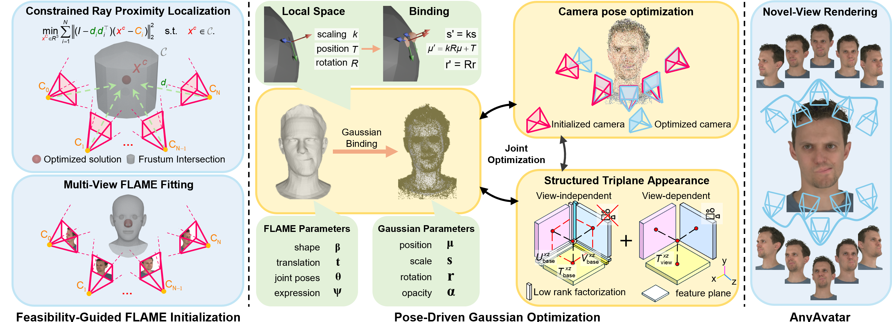

* Equal contribution. † Corresponding author.
Most 3D Gaussian head avatar methods assume accurately calibrated multi-view cameras. In unconstrained capture, predicted poses are coarse, FLAME initialization becomes unstable, and residual pose error is absorbed into appearance, causing overfitting to training views. AnyAvatar removes the calibration requirement and reconstructs animatable high-fidelity Gaussian heads from unposed images.

Fig. 2 summarizes the pipeline. Coarse camera poses are first estimated from uncalibrated views, after which Feasibility-Guided FLAME Initialization and Constrained Ray Proximity Localization recover a stable head that remains observable across views. Pose-Driven Gaussian Optimization then jointly refines camera poses, Gaussian attributes, and FLAME parameters. A structured triplane appearance module further suppresses pose-error compensation and improves cross-view consistency for novel-view rendering and reenactment.